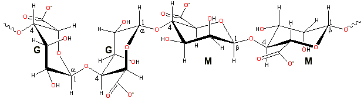
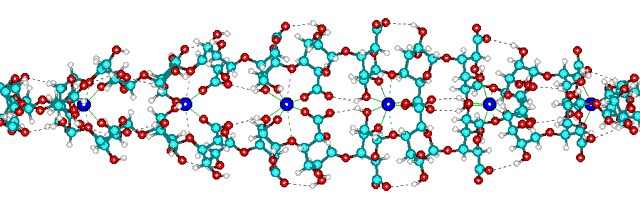

Laminaria hyperborea
 from Baker, A.L. et al. 2012. Phycokey -- an image based key to Algae (PS Protista), Cyanobacteria, and other aquatic objects. University of New Hampshire Center for Freshwater Biology. http://cfb.unh.edu/phycokey/phycokey.htm 17 May 2014")
Alginates rapidly form heat-stable gels at low temperatures.
Alginates (E400-E404)
[3991] are scaffolding polysaccharides produced by brown seaweeds (Fucophyceae, was Phaeophyceae, mainly Laminaria).
Representative alginate structure

Alginates are linear unbranched polymers containing β-(1 4)-linked
D-mannuronic acid (M) and α-(1
4)-linked
D-mannuronic acid (M) and α-(1 4)-linked
L-guluronic acid (G) residues. These residues
are epimers with D-mannuronic acid residues enzymatically converted
to L-guluronic after polymerization. a
They only differ at C5, but they possess very different conformations;
D-mannuronic acids are 4C1 with di-equatorial links between them, and L-guluronic acid is 1C4 with diaxial links. Bacterial
alginates are additionally O-acetylated on the 2 and 3 positions
of the D-mannuronic acid residues. The bacterial O-acetylase may
be used to O-acetylate the algal alginates, so increasing their
water binding. [Back to Top
4)-linked
L-guluronic acid (G) residues. These residues
are epimers with D-mannuronic acid residues enzymatically converted
to L-guluronic after polymerization. a
They only differ at C5, but they possess very different conformations;
D-mannuronic acids are 4C1 with di-equatorial links between them, and L-guluronic acid is 1C4 with diaxial links. Bacterial
alginates are additionally O-acetylated on the 2 and 3 positions
of the D-mannuronic acid residues. The bacterial O-acetylase may
be used to O-acetylate the algal alginates, so increasing their
water binding. [Back to Top  ]
]
Difference between MMMM, GGGG and GMGM structures
Alginates are not random copolymers. According to the source algae, they consist of blocks of similar and strictly alternating residues (that is, MMMMMM, GGGGGG, and GMGMGMGM), each of which has different conformational preferences and behavior. For examples, the M/G ratio of alginate from Macrocystis pyrifera is about 1.6, whereas that recovered from Laminaria hyperborea is about 0.45. Alginates may be prepared with a wide range of average molecular weights (50 - 100000 residues) to suit the application.
Poly β-(1 4)-linked
D-mannuronate prefers forming a 3-fold left-handed helix with (weak)
intra-molecular hydrogen-bonding between the hydroxyl group in the
3-positions and the following ring oxygen (that is, O3-H
4)-linked
D-mannuronate prefers forming a 3-fold left-handed helix with (weak)
intra-molecular hydrogen-bonding between the hydroxyl group in the
3-positions and the following ring oxygen (that is, O3-H O').
Poly α-(1
O').
Poly α-(1 4)-linked
L-guluronate forms stiffer (and more acid-stable) 2-fold screw helical
chains, preferring intra-molecular hydrogen-bonding between the
carboxyl group and the 2-OH group of the prior residues and (weaker)
the 3-OH group of the subsequent residues. The diaxial links also
inherently allow less flexibility. Alternating poly α-(1
4)-linked
L-guluronate forms stiffer (and more acid-stable) 2-fold screw helical
chains, preferring intra-molecular hydrogen-bonding between the
carboxyl group and the 2-OH group of the prior residues and (weaker)
the 3-OH group of the subsequent residues. The diaxial links also
inherently allow less flexibility. Alternating poly α-(1 4)-linked
L-guluronate-β-(1
4)-linked
L-guluronate-β-(1 4)-linked
D-mannuronate contains both equatorial-axial and axial-equatorial
links and takes up dissimilar and rather disorderly conformations. They
have hydrogen bonds between the carboxyl group on the mannuronate
and the 2-OH and 3-OH groups of the subsequent guluronate. The
differing degrees of freedom of the two residues give greater overall
flexibility than the poly β-(1
4)-linked
D-mannuronate contains both equatorial-axial and axial-equatorial
links and takes up dissimilar and rather disorderly conformations. They
have hydrogen bonds between the carboxyl group on the mannuronate
and the 2-OH and 3-OH groups of the subsequent guluronate. The
differing degrees of freedom of the two residues give greater overall
flexibility than the poly β-(1 4)-linked
D-mannuronate chains. The free carboxylic acids (without counter-ion)
have a water molecule H3O+ firmly hydrogen
bound to carboxylate (pKa M 3.38, pKa G 3.65). Ca2+ ions can replace this
hydrogen-bonding zipping guluronate, but not mannuronate, chains
together stoichiometrically in a supposedly 'egg-box'-like conformation.
The ions are the 'eggs' in the puckered box formed by sequential
saccharides The 'box' consists of six oxygen ligands from
the 2-OH and 3-OH plus a carboxylate oxygen from the subsequent residue,
supplied by each poly-guluronate chain, with the seventh and
eighth ligands from the (1
4)-linked
D-mannuronate chains. The free carboxylic acids (without counter-ion)
have a water molecule H3O+ firmly hydrogen
bound to carboxylate (pKa M 3.38, pKa G 3.65). Ca2+ ions can replace this
hydrogen-bonding zipping guluronate, but not mannuronate, chains
together stoichiometrically in a supposedly 'egg-box'-like conformation.
The ions are the 'eggs' in the puckered box formed by sequential
saccharides The 'box' consists of six oxygen ligands from
the 2-OH and 3-OH plus a carboxylate oxygen from the subsequent residue,
supplied by each poly-guluronate chain, with the seventh and
eighth ligands from the (1 4)-O-linkages
slightly further away. Hydrogen-bonding
between the other carboxylate oxygen and 2-OH groups on the subsequent
residues stabilizes the chains. The 'egg-box' structuring has been reviewed [4233]. Poly-guluronate has specific binding sites for calcium
consisting of five oxygen ligands from the 2-OH and 3-OH, (1
4)-O-linkages
slightly further away. Hydrogen-bonding
between the other carboxylate oxygen and 2-OH groups on the subsequent
residues stabilizes the chains. The 'egg-box' structuring has been reviewed [4233]. Poly-guluronate has specific binding sites for calcium
consisting of five oxygen ligands from the 2-OH and 3-OH, (1 4)-O-linkage
and carboxylate and ring oxygen of the subsequent residue, so holding
the calcium ready for this junction zone formation. Initially, dimers are formed [1379].
4)-O-linkage
and carboxylate and ring oxygen of the subsequent residue, so holding
the calcium ready for this junction zone formation. Initially, dimers are formed [1379].
This junction
zone optimally requires 10-12 residues (depending on parameterization)
to form half a complete revolution (as optimized using the AMBER-96 force field [313])
of the parallel left-handed double helix (see below) and consequent
permanent junction zone formation. Interactions with further poly-guluronate
segments favor an unwound sheet-like structure; the winding -unwinding
only requiring changes in the anomeric
linkage angles (φ and ψ)
of about 10° while retaining the hydrogen-bonding and ionic
linkages. A possibly-related two-stage junction zone formation was proposed in 2003 to occur in alginic acid gels, based on X-ray
scattering and rheological characterization [603].
Curiously, calcium poly-guluronate also forms a (only slightly less)
stable parallel right-handed helix (φ and ψ further changing by about 10°) of about the same number of residues
per helix. Here the calcium ions sit in a pocket approximately equispaced
from 10 oxygen ligands (from the 2-OH and 3-OH, (1 4)-O-linkage
and a carboxylate and ring oxygen of the subsequent residue from
both chains). Also, the hydrogen bonds are found from alternative
carboxyl groups and both the 2-OH group and the 3-OH group
of the previous residues on the parallel strand. Under similar conditions,
poly-mannuronic acid blocks take up a less-gelling ribbon conformation,
where carboxylate groups on consecutive residues may bind calcium
intra-molecularly or inter-molecularly.
4)-O-linkage
and a carboxylate and ring oxygen of the subsequent residue from
both chains). Also, the hydrogen bonds are found from alternative
carboxyl groups and both the 2-OH group and the 3-OH group
of the previous residues on the parallel strand. Under similar conditions,
poly-mannuronic acid blocks take up a less-gelling ribbon conformation,
where carboxylate groups on consecutive residues may bind calcium
intra-molecularly or inter-molecularly.
Calcium poly-α-L-guluronate left-handed helix
Calcium poly-alpha-L-guluronate junction zone
Possible helix formation from egg-box dimers.
view down the axis 
view along the axis, showing the hydrogen-bonding and calcium binding sites.

'Designer' alginates may be available in the future by the 5-epimerization
of β-(1 4)-linked
D-mannuronic acid residues to α-(1
4)-linked
D-mannuronic acid residues to α-(1 4)-linked
L-guluronic acid residues in algal alginates using bacterial epimerases.
An available natural alternative is to harvest the seaweed from
exposed seaboards (more G giving the kelp strength)
or sheltered bays (more M). [Back to Top
4)-linked
L-guluronic acid residues in algal alginates using bacterial epimerases.
An available natural alternative is to harvest the seaweed from
exposed seaboards (more G giving the kelp strength)
or sheltered bays (more M). [Back to Top  ]
]
The primary function of the alginates are as thermally stable cold-setting gelling agents in the presence of calcium ions, gelling at far lower concentrations than gelatin. Such gels can be heat treated without melting, although they may eventually degrade. Gelling depends on the ion binding (Mg2+ ≪ Ca2+ < Sr2+ < Ba2+) [2644], with the control of the di-cation addition being essential for the production of homogeneous hydrogels (for example, by ionic diffusion or controlled acidification of CaCO3). High G content produces strong brittle gels with good heat stability (except if present in low relative molecular mass (molecular weight) molecules) but prone to water weepage (syneresis) on freeze-thaw. In contrast, high M content produces weaker more-elastic gels with good freeze-thaw behavior and high MGMG content zips with Ca2+ ions to reduces shear [760]. However, at low or very high Ca2+ concentrations, high M alginates produce stronger gels. So long as the average chain lengths are not unusually short, the gelling properties correlate with average G block length (optimum block size ≈ 12; see also the similarity to pectin gelling) and not necessarily with the M/G ratio which may be primarily due to alternating MGMG chains. The prospects are excellent as recombinant epimerases with different specificities may be used to produce novel designer alginates.
Alginate's solubility and water-holding capacity depend on pH (precipitating below about pH 3.5), molecular mass (lower molecular mass calcium alginate chains with less than 500 residues showing increasing water-binding with increasing size), ionic strength (low ionic strength increasing the extended nature of the chains) and the characteristics of the ions present. Generally, alginates show high water absorption and are used as low-viscosity emulsifiers and shear-thinning thickeners. They are used to stabilize phase separation in low-fat fat-substitutes as alginate/caseinate blends in starch three-phase systems. Alginates are found in a wide variety of foodstuffs such as pet food chunks, onion rings, stuffed olives, low-fat spreads, sauces, and pie fillings. The health roles of alginates have been reviewed [1679].
Propylene glycol alginates have widespread use as acid-stable stabilizers for applications such as preserving the foam head on beers.
A modern industrial use of alginate is within lithium-ion batteries [2799]. Mixing the silicon nanopowder with alginate prevents the rapid degradation of the anodes. This allows the diffusion of Li+ ions into or out of the silicon nanoparticles whilst retaining the binding of the Si nanoparticles to their Cu substrate. The high concentration and uniform distribution of the carboxylic groups along the alginate chains provide these benevolent properties.
Interactive structures are available (Jmol). [Back to Top  ]
]
a Algal, but not bacterial, alginates can also add L-guluronic acid residues directly to the biosynthesizing chains. [Back]
Home | Site Index | Hydrocolloids | Polysaccharide hydration | hydrogen-bonding | LSBU | Top
This page was established in 2002 and last updated by Martin Chaplin on 19 June, 2021